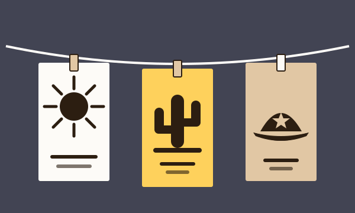

O Brasil em Cordel
O cordel é a poesia que se vende pendurada em barbante e se guarda na memória. Em versos rimados, o folheto nordestino conta histórias de amor e de coragem, desafios de cantadores e episódios da vida e da história do sertão, mantendo viva a tradição de narrar em verso.

O Cordel no Brasil
Os folhetos de cordel chegaram ao Brasil pela tradição ibérica de Portugal e Espanha e receberam esse nome por serem vendidos pendurados em cordões nas feiras. No Nordeste, o folheto encontrou terreno fértil na cultura dos cantadores e repentistas, que animavam feiras, engenhos e casas-grandes com desafios em versos, e a poesia oral passou a ser fixada no papel entre o fim do século XIX e o início do XX. Os pioneiros dessa primeira geração foram Silvino Pirauá de Lima (1848–1913), Leandro Gomes de Barros (1865–1918) e João Melquíades Ferreira da Silva. Coube a Leandro, o primeiro poeta-editor do país, imprimir e vender os próprios folhetos, o que lhe rendeu o título de "pai da literatura de cordel".
Nas décadas seguintes, o cordel consolidou-se como a voz poética do povo nordestino. Francisco das Chagas Batista, poeta e fundador da Popular Editora, ajudou a difundir os folhetos, e autores como José Pacheco levaram ao papel histórias de humor e de lenda, como A Chegada de Lampião no Inferno. O cordel contou romances de cavalaria e de fadas, narrou desafios de cantadores, noticiou fatos, satirizou os poderosos e registrou o cangaço. Mais tarde, a xilogravura tornou-se a marca visual dos folhetos, e a tradição segue viva, com poetas que publicam seus próprios folhetos até hoje.
Em linha do tempo
- Tradição ibérica Os folhetos chegam de Portugal e Espanha e são vendidos pendurados em cordões nas feiras.
- Fim do século XIX A poesia dos cantadores passa ao papel. Silvino Pirauá de Lima, Leandro Gomes de Barros e João Melquíades Ferreira da Silva.
- 1905 Francisco das Chagas Batista publica A Vida de Antônio Silvino, um dos primeiros folhetos do cangaço.
- Décadas seguintes A Popular Editora difunde os folhetos, e José Pacheco escreve A Chegada de Lampião no Inferno.
- Hoje A xilogravura se firma como marca visual, e poetas seguem publicando seus próprios folhetos.
Os Subgêneros do Cordel
Três grandes caminhos marcaram o cordel narrativo. O romance, ou poesia romanceada, conta em versos histórias de aventura, de amor e de maravilhas; a peleja registra no papel os desafios de cantoria entre dois poetas; e o poema narrativo de cangaço e conflito relata, em tom de crônica ou de lenda, a vida de cangaceiros e as disputas do sertão.
Romance (Poesia Romanceada)
O romance em versos é o caminho do cordel mais próximo dos contos tradicionais. Silvino Pirauá de Lima, um dos pioneiros do cordel, é apontado como criador do romance em versos, e Leandro Gomes de Barros levou adiante essa vertente, adaptando contos de fadas e lendas da tradição europeia ao gosto do sertão. Escritos em estrofes como a sextilha e a setilha, esses folhetos reuniam heróis, princesas, dragões e provas de coragem, e estavam entre os mais conhecidos das feiras.
Romances para ler:
Peleja (Cantoria)
A peleja nasce da tradição dos cantadores: um debate poético em que dois poetas se enfrentam, cada um respondendo ao verso do outro no ritmo do repente. No cordel, esses desafios foram passados para o papel, ora recriando disputas reais entre cantadores, ora inventando duelos imaginários, como o de Manoel Riachão com o Diabo, escrito por Leandro Gomes de Barros. A peleja exige memória, rima e rapidez de raciocínio, e coloca em cena o saber popular, as crenças religiosas e o humor.
Pelejas para ler:
Poema Narrativo de Cangaço e Conflito
O cangaço, fenômeno do sertão nordestino, tornou-se um dos grandes temas do cordel. Já em 1905, Francisco das Chagas Batista publicou A Vida de Antônio Silvino, e Leandro Gomes de Barros também escreveu sobre o cangaceiro, que os folhetos retratam ora como justiceiro, ora como bandido. Depois vieram os folhetos sobre Lampião, como A Chegada de Lampião no Inferno, de José Pacheco, em que o medo real do cangaceiro se transforma em humor e fantasia. Nesses poemas narrativos, o cordel funciona como crônica popular e também como memória de um tempo de violência e de disputas pela terra e pelo poder.
Cordéis de cangaço e conflito para ler: